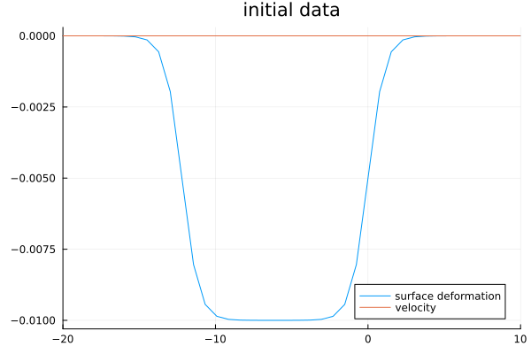
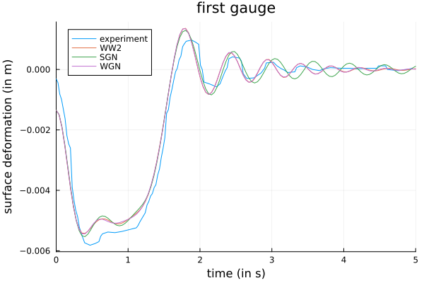
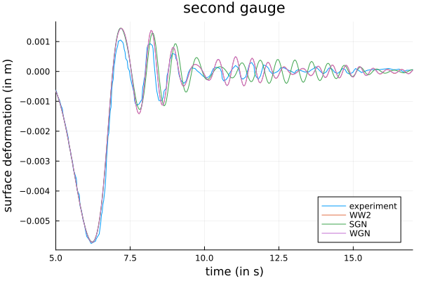
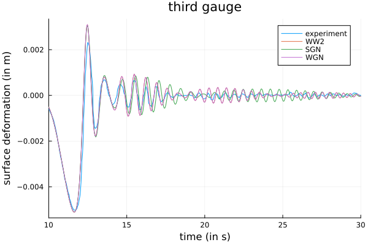
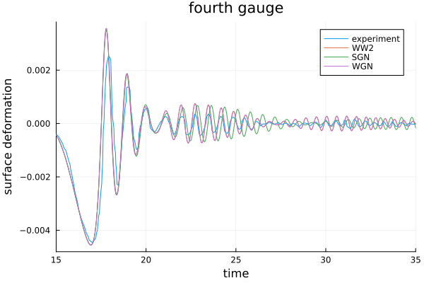
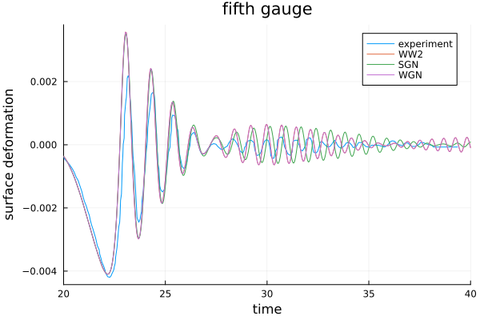

Hammack-Segur
This notebook provides a comparison of several models for water waves on the results of an experiment of Hammack & Segur experiment, in the spirit of Carter).


Initialization
Import package
using WaterWaves1DDefine parameters of the problem
d = 0.1; # depth of the basin (in m)
g = 9.81; # gravitational acceleration
λ = 0.1; # typical horizontal length (=d to simplify)
T = 40; # final time (in s)
L = 156.16; # half-length of the numerical tank (in m)
param = (
# Physical parameters. Variables are non-dimensionalized as in Lannes, The water waves problem, isbn:978-0-8218-9470-5
μ = 1, # shallow-water dimensionless parameter
ϵ = 1, # nonlinearity dimensionless parameter
# Numerical parameters
N = 2^12, # number of collocation points
L = L / d, # half-length of the numerical tank ( = 156.16 m)
T = T * sqrt(g * d) / λ, # final time of computation (= 50 s)
dt = T * sqrt(g * d) / λ / 10^3, # timestep
)(μ = 1, ϵ = 1, N = 4096, L = 1561.6, T = 396.18177646126026, dt = 0.39618177646126024)Define initial data (as in Carter).
using Elliptic, Plots
a = 0.005 # half-amplitude of the initial data (in m)
sn(x) = getindex.(ellipj.(9.25434 * x * d, 0.9999^2), 1); # regularized step function
η0(x) = (-1 / 2 * a .+ 1 / 2 * a * sn(x)) .* (x * d .< 0.61) .* (x * d .> -1.83) / d;
init = Init(x -> 2 * η0(x), x -> zero(x)); # generate the initial data with correct type
x = Mesh(param).x
plot(
x, [init.η(x) * d init.v(x)],
title = "initial data",
label = ["surface deformation" "velocity"],
xlims = (-20, 10)
)
Set up initial-value problems for different models to compare
model_WW2 = WWn(param; n = 2, dealias = 1, δ = 1 / 10) # The quadratic water waves model (WW2)
model_SGN = SerreGreenNaghdi(param) # The Serre-Green-Naghdi model (SGN)
model_WGN = WhithamGreenNaghdi(param) # The fully dispersive Whitham-Green-Naghdi model (WGN)Whitham-Green-Naghdi model.
├─Shallowness parameter μ=1, nonlinearity parameter ϵ=1.
├─No dealiasing. No Krasny filter.
└─Elliptic problem solved with GMRES method with preconditioning, tolerance 1.0e-14, maximal number of iterations 4096, restart after 20 iterations (consider `iterate=false` for non-iterative method).
Discretized with 4096 collocation points on [-1561.6, 1561.6].type ?WaterWaves or ?WWn, etc. to see details and signification of arguments
WW2 = Problem(model_WW2, init, param) ;
SGN = Problem(model_SGN, init, param) ;
WGN = Problem(model_WGN, init, param) ;Computation
Solve integration in time
solve!(WW2);solve!(SGN);solve!(WGN);┌ Info: Now solving the initial-value problem WW2
│ with timestep dt=0.39618177646126024, final time T=396.18177646126026,
└ and N=4096 collocation points.
┌ Info: Now solving the initial-value problem Green-Naghdi
│ with timestep dt=0.39618177646126024, final time T=396.18177646126026,
└ and N=4096 collocation points.
┌ Info: Now solving the initial-value problem Whitham-Green-Naghdi
│ with timestep dt=0.39618177646126024, final time T=396.18177646126026,
└ and N=4096 collocation points.Visualization
Import the data (from the Hammack\&Segur experiment, kindly provided by Carter)
using DelimitedFiles
data_dir = joinpath(pkgdir(WaterWaves1D), "examples", "data");
data2a = readdlm(joinpath(data_dir, "Fig2aFixed.out"), '\t');
data2b = readdlm(joinpath(data_dir, "Fig2bFixed.out"), '\t');
data2c = readdlm(joinpath(data_dir, "Fig2cFixed.out"), '\t');
data2d = readdlm(joinpath(data_dir, "Fig2dFixed.out"), '\t');
data2e = readdlm(joinpath(data_dir, "Fig2eFixed.out"), '\t');
"""
gauge(p::Problem;x,t)
Give the surface elevation provided by a problem
at a specific location `x` (by default, `x=0`),
and at times defined by `t` if provided (otherwise at all computed times).
"""
function gauge(p::Problem; x = 0, T = nothing)
if T == nothing
times = p.times.ts
elseif T[1] == T
times = [T]
else
times = T
end
return times / sqrt(g * d) * λ, [solution(p, T = ti, x = [x])[1][1] for ti in times] * d
endPlot data and numerics at first gauge
plt = plot(
data2a[:, 1] / sqrt(g * d) * λ, data2a[:, 2] * d * 2 / 3,
title = "first gauge",
label = "experiment",
xlabel = "time (in s)",
ylabel = "surface deformation (in m)"
)
plot!(
[gauge(WW2, x = 1), gauge(SGN, x = 1), gauge(WGN, x = 1)],
label = ["WW2" "SGN" "WGN"]
)
xlims!(0, 5)
Plot data and numerics at second gauge
plt = plot(
(data2b[:, 1] .+ 50) / sqrt(g * d) * λ, data2b[:, 2] * d * 2 / 3,
title = "second gauge",
label = "experiment",
xlabel = "time (in s)",
ylabel = "surface deformation (in m)"
)
plot!(
[gauge(WW2, x = 51), gauge(SGN, x = 51), gauge(WGN, x = 51)],
label = ["WW2" "SGN" "WGN"]
)
xlims!(5, 17)
Plot data and numerics at third gauge
plt = plot(
(data2c[:, 1] .+ 100) / sqrt(g * d) * λ, data2c[:, 2] * d * 2 / 3,
title = "third gauge",
label = "experiment",
xlabel = "time (in s)",
ylabel = "surface deformation (in m)"
)
plot!(
[gauge(WW2, x = 101), gauge(SGN, x = 101), gauge(WGN, x = 101)],
label = ["WW2" "SGN" "WGN"]
)
xlims!(10, 30)
Plot data and numerics at fourth gauge
plt = plot(
(data2d[:, 1] .+ 150) / sqrt(g * d) * λ, data2d[:, 2] * d * 2 / 3,
title = "fourth gauge",
label = "experiment",
xlabel = "time",
ylabel = "surface deformation"
)
plot!(
[gauge(WW2, x = 151), gauge(SGN, x = 151), gauge(WGN, x = 151)],
label = ["WW2" "SGN" "WGN"]
)
xlims!(15, 35)
Plot data and numerics at fifth gauge
plt = plot(
(data2e[:, 1] .+ 200) / sqrt(g * d) * λ, data2e[:, 2] * d * 2 / 3,
title = "fifth gauge",
label = "experiment",
xlabel = "time",
ylabel = "surface deformation"
)
plot!(
[gauge(WW2, x = 201), gauge(SGN, x = 201), gauge(WGN, x = 201)],
label = ["WW2" "SGN" "WGN"]
)
xlims!(20, 40)
The quadratic water waves model and Whitham-Green-Naghdi model predict are almost indistinguishable, because the steepness of the wave is very small.
This page was generated using Literate.jl.